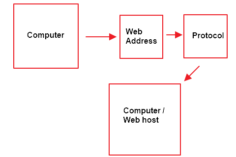

Diego Abreu - Midterm
1.
Create a midterm page.
2.
A) A relative hyperlink opens within the website without sending the user to a different site, aswell it is used because
the link is accessing information on the root of the website. An absolute hyperlink sends the user into a new tab outside
of your website, this is better when linking to a different website because that information isn't accessed locally.
B) An example of a relative hyperlink
Project Homepage.
C) An example of a absolute hyperlink
Amazon.
3.
Before the hyperlink information was sent through a specific protocol
and to access a website you must know the specfic website address
from the person who owns the website because before hyperlink
websites weren't just click and access.
Now the hyperlink sends you directly to the page you are attempting
to access without needing the very specific web address before hypelinks.

4.
The CSS Class I created is named classCss.
5.
The internet is what connects computers together creating a network
of information which allows each computer to communicate
between each other as long as protocols are followed.
The world wide web is accessed through HTTP which is a language
that sends information to browsers and allows users to browse the web.